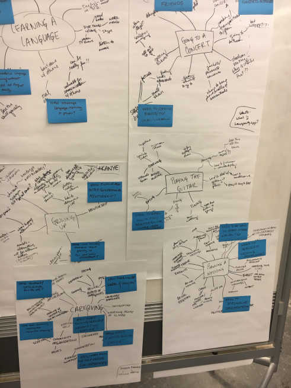
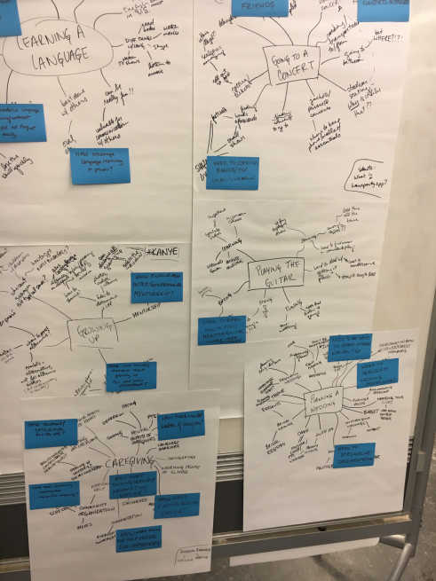

Client:
Dartmouth College
Role:
UX/UI Designer
User Researcher
Tools:
Interviewing
Mind-mapping
iMovie
Deliverables:
Mock-ups
Class Presentation
How might we use computing and connectivity to improve human experiences?
Assignment:
To work on the "front-end" conceptual process of need-finding and envisioning a digital innovation to enable new and better experiences for its users.
Mind-mapping:
My partner and I first began by brainstorming 100+ human experiences we could potentially innovate, asking ourselves, "Who is being left behind?"

 

After selecting and solidifying an opportunity, our next step was to begin the conceptual design process. After storyboarding a use-case, we "presented the future with our innovation in it" to the rest of the class.
Proposed Solution:
Imagine that someone in your family has been diagnosed with a serious illness. The treatment and care will be long-term, and will undoubtedly bring many changes to your everyday life. You are expected to be one of the primary
caregivers for your family
member. This means that on top of everything you already do, such as school or work, meal preparation, grocery shopping, and taking care of the rest of the family, you will have to attend doctor’s appointments and various
consultations as well
as attend to the basic needs for the family member who is sick.
All of these things quickly become overwhelming, especially when you factor in the mental and emotional labor of the situation. When you realize that you
need help…who do you call?
When something like this happens, people in the community may want to help, but it can be awkward to know what to say or do. This makes supporting caregivers an even trickier situation. When
my
partner and I
considered the challenge of caregiving, we talked extensively about the issue of asking for help. There is a lot of pressure placed on the
individual
to perform in Western society. Asking for help can be seen as admitting that you failed to do it on your own.
So we moved to our next "How Might We” statement…How might we make asking for help easier for caregivers?
There are
a
few key goals that we identified as necessary to make asking for support easier for caregivers. The system needed to organize communities to help, and then synthesize this information in a way that was not overwhelming to the caregiver.
Another
goal that we identified was the overall mental and emotional support of caregivers. We believe our system does that through bringing together people that most want to help them.
This is where "Supporting Roles" comes in.
- The calendar is a comprehensive overview of all the tasks.
- The notifications toolbar on the left pops up when people have committed to tasks that need approval by the caregiver.
- Then we go to the tasks page, where the caregiver or another administrator on the site is able to input tasks for the volunteers.
- Next is the planner. While looking at the entire day’s schedule, you can also approve pending tasks.
- The circles page shows the different groups connected with the family. Supporting Roles tracks the tasks of each volunteer.
The defining feature of Supporting Roles is its pattern recognition. Supporting Roles tracks the tasks of volunteers and, based on this information, makes suggestions for future tasks. Let’s say that Mrs. Smith always picks up the kids from school on Thursdays, or Ben drops off dinner every other week on Mondays. Supporting Roles would send them reminder emails of the upcoming tasks and make it easier to commit to the same tasks. This helps maintain some normalcy in the family schedule during an otherwise hectic time.
Next Steps:
Looking forward, we envision iCal integration for easier task-management as well as specialization for different cultural understandings. Asking for help may not have the same implications or challenges in one culture compared to
another. We can also see
Supporting Roles take on different forms depending on the situation. For example, helping a family who recently welcomed a child into the world or a family undergoing a recent loss.
Both my partner and I have had similar experiences watching one of our parents battle with disease, which is what prompted the beginning stages of Supporting Roles. As we continued to build the site, we realized that some
websites,
like CaringBridge and Lotsa Helping Hands, were accomplishing a lot of what we thought was important to help caregivers. But even though these sites organized community members, they still didn’t solve our main how-might-we:
How Might We make asking for help easier for caregivers?
We wanted to automate asking for help to a certain extent, because having to constantly input tasks means feeling like you’re constantly asking people for help. This is where our 'pattern recognition’ system came in. With the automated suggestions, caregivers can spend less time inputting tasks and more time doing the things that matter, like spending time with their loved ones and taking time to recharge.